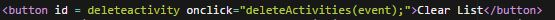

Javascript is a computer language that is commonly used on the world wide web to manipulate the DOM. The DOM, or Document Object Model, is the html code that the creates what happens behind what the user sees. What Javascript does is it manipulates this so that users can see and do more than what the standard html allows. Much like how CSS changes what the user can see, the Javascript can do this along with what is happening and what can happen. For example, I used Javascript to create a todo list. Inorder to do this, I had to break up my code into two places: HTML and Javascript
Before I start to talk about the actual code that makes up the to do list, it's important to realize that because the javascript is a different language than HTML, we have to tell the HTML that we will be speaking javascript. We can do this in one of two places, the head of the HTML or in the body of the HTML. I chose to write in the body, and all we have to do is write <script type=”text/javascript” src=”todo.js”></script> and all this means is that the script tags <script></script> will be javascript. Because it is in the body we can choose to write our javascript in between these script tags, but I chose to write my code in a separate js file, so I have to tell the HTML to look for todo.js(what I named my javascript file) and use the code that is in this file.
When I was first working on my project, I didn’t tell the HTML to look for over even try to listen to the javascript, so I spent about a day of work trying to figure out why nothing was working. All my functions in the Javascript file were correct yet the website simply would not do what I had written. This is definitely one of my many embarrassing moments in class because after Mr. Hesby wrote <script type=”text/javascript” src=”todo.js”></script> the program worked seamlessly.*facepalm*
Now that I have my HTML listening to JavaScript, I can begin to create the different id’s in my HTML.
In total, there were 5 ids that were necessary for my todo list; delete activity, activity, colorInput, addactivity, and list.
And this is pretty much the only necessary ids for a working calculator and from here we can finally move over to the Javascript which is even more fun.
So we have these 5 ids, but what do we do with them? Well these id’s are extremely important because we can use Javascript to manipulate what happens with these ids. Let's start with changing these id’s into variables. Variables can be thought of as a container, in the container we can program the computer to store data. Let's look at the addactivity variable for example. Looking at the list of ids, we can see that this id is supposed to represent a button. But how does the Javascript even know that this id exists? Well we can actually tell the computer to look for data to store into this data. And we do that by setting the variable to document.getElementById(“id name”)

Basically we are telling the variable to get data from an id known as addactivity which for convenience is the same name as the variable. This document.getElementById is actually a variable that was preprogramed into JavaScript so that we lazy programers do not have to each make a variable for getting information from another file
As stated though, this addactvity id is supposed to be a button, so how do we make the HTML look for this button getting click? Well there are actually two ways to do this. For the addactivity button, however, I used an addEventListener.
Now we can have it looking for a number of different things, but for a button I want the user to be able to click it, so in the parenthesis I put “click” which is a preprogrammed event that listens for the users mouse to click.

So now we have a way to look for a click, but how do we actually get it to do what it needs to do? Well here is where we begin the real process of a to do list, and that begins by creating a function. A function could be thought of as another container. This container however does not store data, rather it contains code that is meant to perform a specific task.
So we have this empty function, and we have this empty to do list. How do we take a user input and add it to the todo list. Quite simply, we do this in the function of the eventlistener. It's important though to point out what the input variable is. Looking at the html we can see that there is and <input> with a id of activity.
And we already have a variable for this id in our Javascript file.
So let me just show you the code I used.
Now lets break it down.
I did not want people to just keep spamming the add button, so I made an if else statement saying that if the input is empty it will alert that you need to add some text.
Other wise it will take the value of the input. And it will make add it and make it equal to what the user put into the input.
Now this will just get a standard piece of text, but as you can see we put it in the middle of a div, this being said, we now have a lot more control over what can happen to it. This is where I added one of my first features, color coding. Different activities should have a different status. So by quickly jumping to the HTML again, we made an id for this exact feature. This is in a <select> which allows us to create a dropbox of different options. We can set the value of these options to certain colors that I want to use.
Now we just say that we want to change the style of the div, and the color of the text using css. And that color will be the value of the drop down option.
And Boom, we can add and set the colors of different activities on our to do list.
As stated, there are two ways of creating a event listener. I already explained the Javascript way, but there is another that actually is down in the HTML. I want my users to be able to clear the todo list. In Order to do this, I created the deleteActivities button
This image is from my HTML, as you can see I created a onclick event named deleteActivities. By itself, deleteActivites does nothing, because it is just an empty function. This is where Javascript comes in. In the Javascript I was able to program the code block for what will happen.
Again I used an If statement. All this is, is a confirmation box that pops up to confirm if the user wants to clear the entire list. I added this so my users do not accidentally delete everything on their list. But if the user clicks yes, all I did to clear it was set my list variable to empty quotation marks “”.
And Boom, this is my todo list.